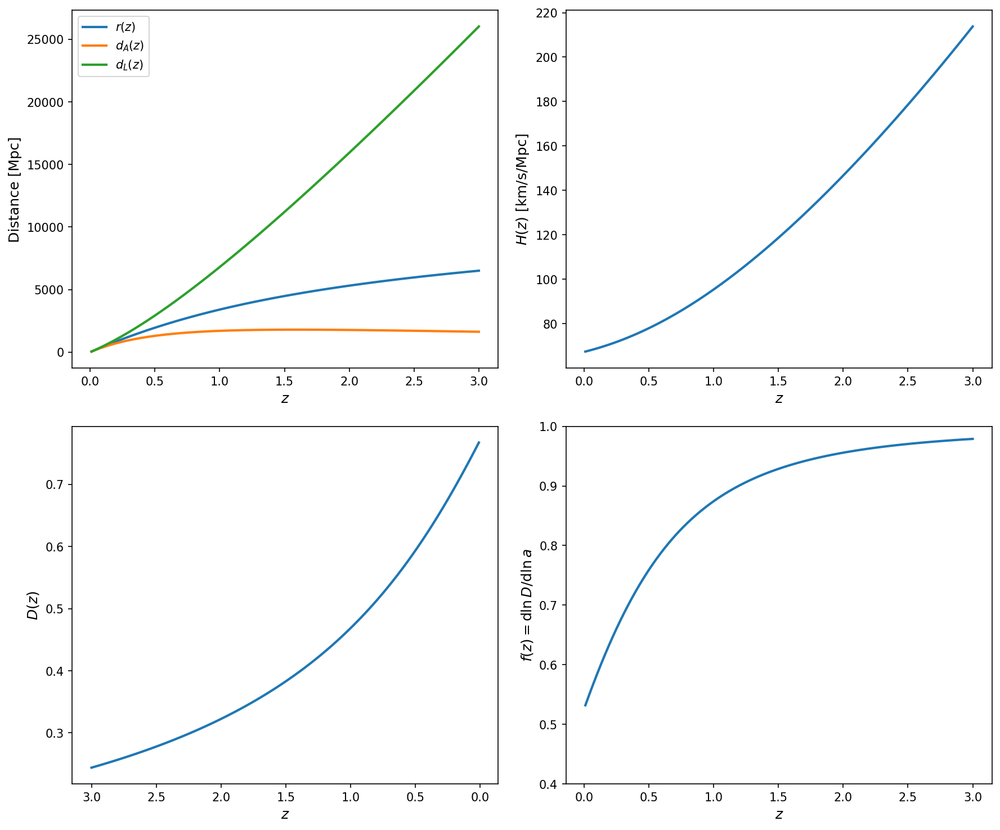
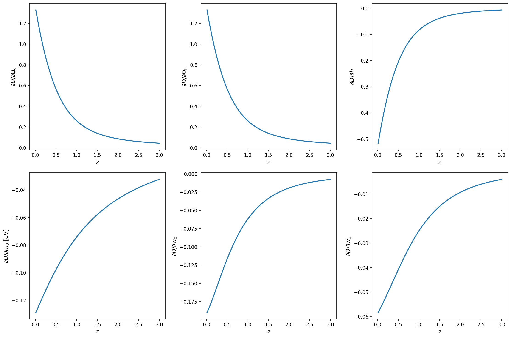
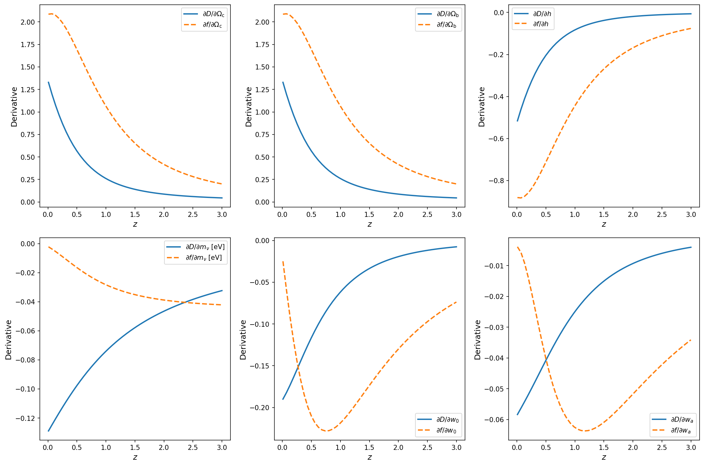
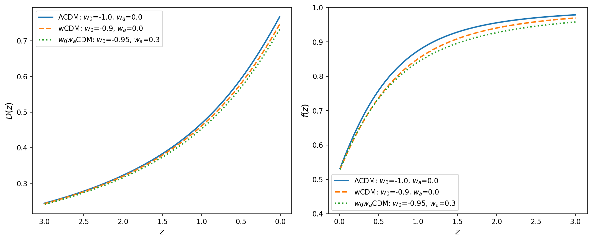

Examples¶
Basic Cosmology Calculations¶
This example demonstrates how to use the W0WaCDMCosmology class to compute various cosmological quantities and visualize them.
Setting up the Cosmology¶
First, let's create a cosmology instance with standard ΛCDM parameters (Planck 2018):
import jax
import jax.numpy as jnp
import matplotlib.pyplot as plt
import jaxace
# Create a cosmology instance with Planck 2018 parameters
cosmo = jaxace.W0WaCDMCosmology(
ln10As=3.044, # ln(10^10 A_s)
ns=0.9649, # Scalar spectral index
h=0.6736, # Hubble parameter
omega_b=0.02237, # Baryon density
omega_c=0.1200, # CDM density
m_nu=0.06, # Sum of neutrino masses in eV
w0=-1.0, # Dark energy equation of state
wa=0.0 # Dark energy evolution parameter
)
Computing Distances¶
Now let's compute the comoving distance for a range of redshifts:
# Create redshift array from 0 to 3
z = jnp.linspace(0.01, 3.0, 100)
# Compute comoving distance
r_comoving = cosmo.r_z(z)
# Also compute angular diameter and luminosity distances
dA = cosmo.dA_z(z)
dL = cosmo.dL_z(z)
Computing Growth Functions¶
Let's compute the linear growth factor and growth rate:
# Compute growth factor D(z) and growth rate f(z)
D = cosmo.D_z(z)
f = cosmo.f_z(z)
# We can also get both at once for efficiency
D_both, f_both = cosmo.D_f_z(z)
Visualizing the Results¶
Now let's create plots to visualize these cosmological quantities:
# Create a figure with subplots
fig, axes = plt.subplots(2, 2, figsize=(12, 10))
# Plot 1: Distance measures
ax = axes[0, 0]
ax.plot(z, r_comoving, label='Comoving distance $r(z)$', linewidth=2)
ax.plot(z, dA, label='Angular diameter distance $d_A(z)$', linewidth=2)
ax.plot(z, dL, label='Luminosity distance $d_L(z)$', linewidth=2)
ax.set_xlabel('Redshift $z$')
ax.set_ylabel('Distance [Mpc]')
ax.set_title('Cosmological Distances')
ax.legend()
ax.grid(True, alpha=0.3)
# Plot 2: Hubble parameter
ax = axes[0, 1]
E_z = jaxace.E_z(z, cosmo.omega_b + cosmo.omega_c, cosmo.h,
mν=cosmo.m_nu, w0=cosmo.w0, wa=cosmo.wa)
H_z = 100 * cosmo.h * E_z # H(z) in km/s/Mpc
ax.plot(z, H_z, color='darkblue', linewidth=2)
ax.set_xlabel('Redshift $z$')
ax.set_ylabel('$H(z)$ [km/s/Mpc]')
ax.set_title('Hubble Parameter Evolution')
ax.grid(True, alpha=0.3)
# Plot 3: Growth factor
ax = axes[1, 0]
ax.plot(z, D, color='darkgreen', linewidth=2)
ax.set_xlabel('Redshift $z$')
ax.set_ylabel('$D(z)$')
ax.set_title('Linear Growth Factor')
ax.grid(True, alpha=0.3)
ax.invert_xaxis() # Convention: D grows as z decreases
# Plot 4: Growth rate
ax = axes[1, 1]
ax.plot(z, f, color='darkred', linewidth=2)
ax.set_xlabel('Redshift $z$')
ax.set_ylabel('$f(z) = d\\ln D / d\\ln a$')
ax.set_title('Growth Rate')
ax.grid(True, alpha=0.3)
ax.set_ylim([0.4, 1.0])
plt.tight_layout()
plt.show()

Using JAX Features¶
One of the advantages of jaxace is that all functions are JAX-compatible, enabling automatic differentiation and JIT compilation:
# JIT compile for faster repeated calculations
@jax.jit
def compute_distances_fast(z_array, omega_c, omega_b, h):
"""JIT-compiled function for fast distance calculations."""
cosmo = jaxace.W0WaCDMCosmology(
ln10As=3.044, ns=0.9649, h=h,
omega_b=omega_b, omega_c=omega_c,
m_nu=0.06, w0=-1.0, wa=0.0
)
return cosmo.r_z(z_array)
# Compute gradient with respect to cosmological parameters
grad_fn = jax.grad(lambda omega_c: compute_distances_fast(
jnp.array([1.0]), omega_c, 0.02237, 0.6736
).sum())
# Calculate derivative of comoving distance at z=1 with respect to omega_c
d_r_d_omega_c = grad_fn(0.12)
print(f"∂r(z=1)/∂Ω_c = {d_r_d_omega_c:.2f} Mpc")
Computing Jacobians of Growth Functions¶
A powerful feature of jaxace is the ability to compute Jacobians (derivatives) of cosmological quantities with respect to all input parameters simultaneously:
import jax
import jax.numpy as jnp
import matplotlib.pyplot as plt
import jaxace
# Define a function that computes growth factor for given parameters
def growth_factor_function(params, z):
"""Compute growth factor D(z) for given cosmological parameters."""
omega_c, omega_b, h, m_nu, w0, wa = params
cosmo = jaxace.W0WaCDMCosmology(
ln10As=3.044, # Keep fixed for this example
ns=0.9649, # Keep fixed for this example
h=h,
omega_b=omega_b,
omega_c=omega_c,
m_nu=m_nu,
w0=w0,
wa=wa
)
return cosmo.D_z(z)
# Define fiducial parameters (Planck 2018)
fiducial_params = jnp.array([
0.1200, # omega_c
0.02237, # omega_b
0.6736, # h
0.06, # m_nu (eV)
-1.0, # w0
0.0 # wa
])
# Redshift array
z = jnp.linspace(0.01, 3.0, 50)
# Compute Jacobian matrix: dD/dθ for all parameters at all redshifts
jacobian_fn = jax.jacobian(growth_factor_function, argnums=0)
jacobian = jacobian_fn(fiducial_params, z)
# jacobian shape is (n_z, n_params)
print(f"Jacobian shape: {jacobian.shape}")
print(f"Parameters: [omega_c, omega_b, h, m_nu, w0, wa]")
# Plot the derivatives
fig, axes = plt.subplots(2, 3, figsize=(15, 10))
param_names = ['$\\Omega_c$', '$\\Omega_b$', '$h$', '$m_\\nu$ [eV]', '$w_0$', '$w_a$']
param_labels = ['omega_c', 'omega_b', 'h', 'm_nu', 'w0', 'wa']
for i, (ax, name, label) in enumerate(zip(axes.flat, param_names, param_labels)):
ax.plot(z, jacobian[:, i], linewidth=2.5, color=plt.cm.viridis(i/5))
ax.set_xlabel('Redshift $z$')
ax.set_ylabel(f'$\\partial D/\\partial${name}')
ax.set_title(f'Growth Factor Sensitivity to {name}')
ax.grid(True, alpha=0.3)
ax.axhline(y=0, color='k', linestyle='--', alpha=0.3)
# Add text with max sensitivity
max_idx = jnp.argmax(jnp.abs(jacobian[:, i]))
max_z = z[max_idx]
max_val = jacobian[max_idx, i]
ax.text(0.95, 0.95, f'Max at z={max_z:.2f}\\n∂D/∂{label}={max_val:.3f}',
transform=ax.transAxes, ha='right', va='top',
bbox=dict(boxstyle='round', facecolor='wheat', alpha=0.5))
plt.suptitle('Jacobian of Growth Factor D(z) w.r.t. Cosmological Parameters',
fontsize=16, fontweight='bold')
plt.tight_layout()
plt.show()

Computing Jacobians for Multiple Quantities¶
We can also compute Jacobians for both growth factor D(z) and growth rate f(z) simultaneously:
# Define a function that returns both D and f
def growth_functions(params, z):
"""Compute both D(z) and f(z) for given parameters."""
omega_c, omega_b, h, m_nu, w0, wa = params
cosmo = jaxace.W0WaCDMCosmology(
ln10As=3.044, ns=0.9649,
h=h, omega_b=omega_b, omega_c=omega_c,
m_nu=m_nu, w0=w0, wa=wa
)
D, f = cosmo.D_f_z(z)
return jnp.stack([D, f]) # Stack to get shape (2, n_z)
# Compute Jacobian for both quantities
jacobian_both_fn = jax.jacobian(growth_functions, argnums=0)
jacobian_both = jacobian_both_fn(fiducial_params, z)
# jacobian_both shape is (2, n_z, n_params)
# where index 0 is D(z) and index 1 is f(z)
jacobian_D = jacobian_both[0] # Shape: (n_z, n_params)
jacobian_f = jacobian_both[1] # Shape: (n_z, n_params)
# Plot comparison of sensitivities for D and f
fig, axes = plt.subplots(2, 3, figsize=(15, 10))
for i, (ax, name, label) in enumerate(zip(axes.flat, param_names, param_labels)):
ax.plot(z, jacobian_D[:, i], label='$\\partial D/\\partial$' + name,
linewidth=2.5, color='blue')
ax.plot(z, jacobian_f[:, i], label='$\\partial f/\\partial$' + name,
linewidth=2.5, color='red', linestyle='--')
ax.set_xlabel('Redshift $z$')
ax.set_ylabel('Derivative')
ax.set_title(f'Sensitivity to {name}')
ax.legend(loc='best')
ax.grid(True, alpha=0.3)
ax.axhline(y=0, color='k', linestyle=':', alpha=0.3)
plt.suptitle('Comparison of D(z) and f(z) Sensitivities',
fontsize=16, fontweight='bold')
plt.tight_layout()
plt.show()

Comparing Different Cosmologies¶
Let's compare how different dark energy models affect the growth of structure:
# Define different cosmologies
cosmologies = {
'ΛCDM': {'w0': -1.0, 'wa': 0.0},
'wCDM': {'w0': -0.9, 'wa': 0.0},
'w0waCDM': {'w0': -0.95, 'wa': 0.3},
}
# Compute growth factors for each cosmology
fig, (ax1, ax2) = plt.subplots(1, 2, figsize=(12, 5))
for name, params in cosmologies.items():
cosmo_test = jaxace.W0WaCDMCosmology(
ln10As=3.044, ns=0.9649, h=0.6736,
omega_b=0.02237, omega_c=0.1200,
m_nu=0.06, **params
)
D_test = cosmo_test.D_z(z)
f_test = cosmo_test.f_z(z)
ax1.plot(z, D_test, label=name, linewidth=2)
ax2.plot(z, f_test, label=name, linewidth=2)
ax1.set_xlabel('Redshift $z$')
ax1.set_ylabel('$D(z)$')
ax1.set_title('Growth Factor Comparison')
ax1.legend()
ax1.grid(True, alpha=0.3)
ax1.invert_xaxis()
ax2.set_xlabel('Redshift $z$')
ax2.set_ylabel('$f(z)$')
ax2.set_title('Growth Rate Comparison')
ax2.legend()
ax2.grid(True, alpha=0.3)
ax2.set_ylim([0.4, 1.0])
plt.tight_layout()
plt.show()

Performance Tips¶
JIT Compilation¶
For optimal performance, especially when computing many values:
# JIT compile the entire calculation pipeline
@jax.jit
def compute_all_quantities(z_array, cosmo):
"""Compute all cosmological quantities at once."""
r = cosmo.r_z(z_array)
D, f = cosmo.D_f_z(z_array)
return r, D, f
# First call will compile
z_test = jnp.linspace(0.01, 3.0, 1000)
r, D, f = compute_all_quantities(z_test, cosmo)
# Subsequent calls will be much faster
%timeit compute_all_quantities(z_test, cosmo)
Vectorization¶
All functions support vectorized inputs for efficient batch calculations:
# Compute for multiple redshifts at once (vectorized)
z_grid = jnp.logspace(-2, 0.5, 50) # z from 0.01 to ~3.16
r_grid = cosmo.r_z(z_grid)
# This is much faster than a loop:
# for zi in z_grid:
# ri = cosmo.r_z(zi) # Slower!
Next Steps¶
- Explore the API Reference for detailed function documentation
- Check the neutrino mass effects by varying
m_nu - Experiment with different dark energy models using
w0andwa - Use JAX's automatic differentiation to compute derivatives of cosmological quantities